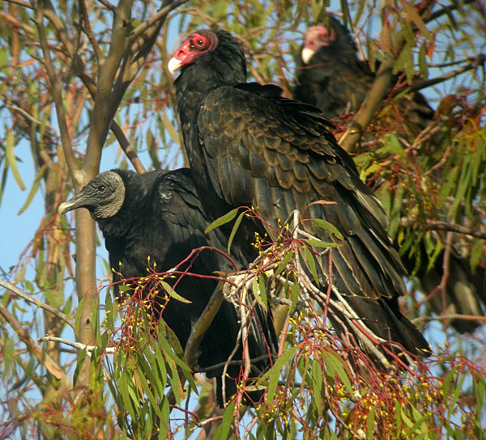

| These photographs accompany records that have been recently submitted to the committee. This record
has been ACCEPTED.  Black Vulture (Coragyps atratus) 11 September 2009, Goleta, SBA 2009-156 © 2009 Curtis Marantz Back to CBRC Rare Bird Photos |